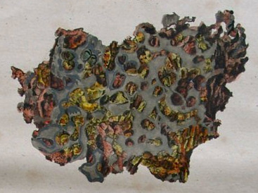

Krasnojarsk was the first pallasite meteorite ever found and studied and led to the creation of the Pallasite group, named after Pallas.
It was also the first meteorite ever etched with acid (by G. Thomson) and therefore was the first one to show to human eyes the Widmanstätten pattern.
